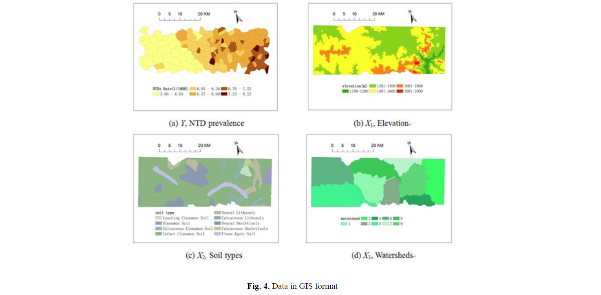
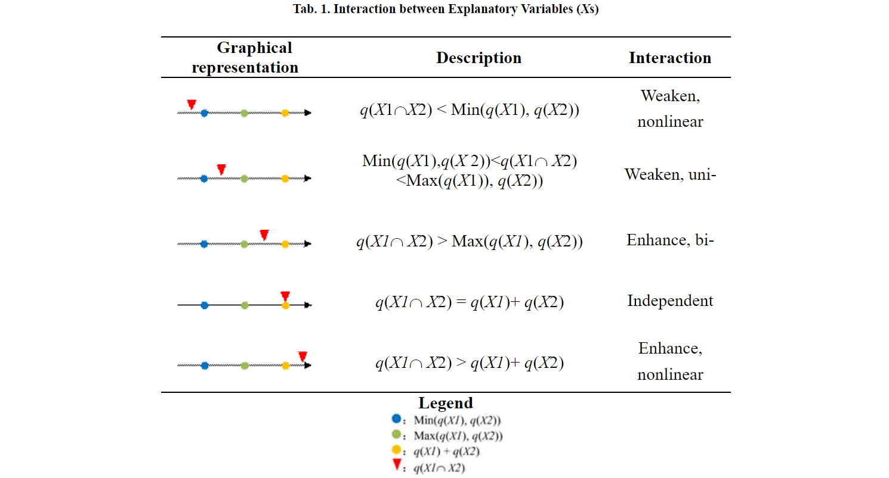

1. 原理讲解
空间分层异质性（SSH）是指层内比层间更相似的现象。这方面的例子包括空间数据中的土地利用类型和气候区、时间序列中的季节和年份、职业、年龄组、收入阶层等。SSH 存在于从宇宙到 DNA 的所有尺度中，从亚里士多德时代就开始对其进行研究。
Geodetector 或称 "地理探测器"，是一种统计工具，用于测量 SSH 并为 SSH 或通过 SSH 进行归因（Fig.1）：
(1) 测量和识别数据间的 SSH；
(2) 测试两个变量 Y 和 X 之间的耦合，无需假定关联的线性关系，并具有明确的物理含义；
(3) 研究两个解释变量 X1 和 X2 与一个响应变量 Y 之间的一般交互作用，而无需任何特定形式的交互作用，如计量经济学中假设的乘积（Fig.2）。
上述每一项任务都可以使用 Geodetector q 统计量来完成：
Y 的分层（Fig.1中的红色多边形）是根据 Y 本身或解释变量 X 对 Y 的划分。根据已有知识或分类算法，分层数 L 可以是 2-10 或更多。空间分层异质性 "中的 "空间 "既可以是地球科学中的空间，也可以是广义的数学意义上的空间，如时间和任何属性。
Geodetector q 统计量的解释（Fig.1）。
q 的值严格控制在 [0, 1] 范围内。
(1) 如果 Y 是由 Y 本身分层的，那么 q 统计量为 0 表示 Y 不存在空间分层异质性；q 统计量为 1 表示 Y 完全空间分层异质性；q 统计量为 100q% 表示 Y 的空间分层异质性程度。
(2) 如果 Y 是由解释变量 X 分层的，那么 q 统计量为 0 表示 Y 与 X 之间没有耦合；q 统计量为 1 表示 Y 完全由 X 决定；X 解释了 100q% 的 Y。
Geodetector q 统计量可用于了解空间混杂、样本偏差和过度拟合。
(1) 如果将模型应用于（空间）分层异源人群，可能会产生混杂，从而导致对模型结果的误导性解释和统计不显著性。可以通过识别 SSH（通过 Geodetector q 统计量），然后在分层中分别建模来避免这一问题。
(2) 如果人口具有（空间）分层异质性，且样本未覆盖所有层，则样本会出现偏差。这个问题可以通过识别（空间）分层异质性（使用 Geodetector q 统计量），然后应用偏差补救模型（如 Heckman 回归法和 Bshade 法）来解决。
(3) 局部模型旨在克服异质性，但往往存在过度拟合和参数过多难以解释的问题。通过分层建模或对局部模型的输出进行分层，然后解释分层参数，可以避免这些问题。
地理探测器的功能
(1) 风险检测器根据 X 将响应变量 Y 映射到分层中；
(2) 因素检测器 q 统计量衡量变量 Y 的空间分层异质性程度（如果 Y 本身分层）；以及解释变量 X 对 Y 的决定力（如果 Y 被 X 分层）；
(3) 生态检测器识别两个解释变量 X1 和 X2 之间的影响差异；
(4) 交互作用检测器揭示风险因素 X1 和 X2（以及更多的 X，如果适用）是否对反应变 量 Y 具有交互影响（Fig.2）。
2. 数据要求与预处理
输入数据包括因变量Y和自变量数据X。自变量应为类型量；如果自变量为数值量，则需要进行离散化处理。离散可以基于专家知识，也可以直接等分或使用分类算法如K-means等。若数据为GIS数据，需要先将其转化为下图所示的Excel数据。以现有数据2017年城市蔓延度为因变量，选取自变量指标（部分）如下表，并将这8个指标进行自然断点法划分为5类。
| 与城市蔓延度有关经济因素 | ||
|---|---|---|
| 经济因素 | 宏观经济 | 地区生产总值X1 |
| 人均地区生产总值X2 | ||
| 产业结构 | 第二产业占比X3 | |
| 第三产业占比X4 | ||
| 劳动力结构 | 第二产业就业人员比重X5 | |
| 第三产业就业人员比重X6 | ||
| 固定资产投资 | 房地产开发投资完成额X7 | |
| 外商投资 | 实际使用外资金额X8 | |
3. 使用教程
Geodetector 软件分别使用 Excel 和 R 开发。这些工具都是免费的，可免费下载，易于使用，在设计时不使用任何 GIS 插件组件，可 "一键 "执行。用户可以运行以下演示，然后只需用自己的数据替换软件中的演示数据，点击运行即可得到结果！下面我们介绍 Excel Geodetector 软件。R 用户可以在下面的 "下载 Geodetector 软件和示例数据集 "部分下载 R Geodetector 软件。
作为演示，我们提供了神经管畸形（NTD）Y 和村庄中的疑似风险因素或其替代物 Xs，包括健康效应层 "NTD 患病率 "和环境因素层 "海拔"、"土壤类型 "和 "流域 "的数据。它们的字段名分别定义为 Y 和 X1、X2、X3。
步骤1. 下载软件并在 Excel 中输入数据
(1) 下载 Excel Geodetector 软件（在下面的 "软件和示例数据下载 "部分），单击下载三个示例中的任一个，解压下载的文件，您会发现一个 Excel 文件（这是带有示例数据集的 Geodetector 软件！），双击 Excel 文件，出现Fig.4 和Fig.5。Fig.4 是 Geodetector 的输入数据格式：每一行表示一个样本单位（如一个村庄）；第 1 列记录响应变量 Y；第 2 列及以后各列表示 Y 或因子 X 的分区，后者根据分层内的相似性进行分区。
(2) 按Fig.4 的格式将数据输入 Excel Geodetector 软件。然后转到步骤 2。
(3) 如果您的数据是 GIS 格式，如Fig.4 所示，您可以直接使用第 4 节中的 QGIS，也可以将 GIS 数据转换为 Excel 数据，如Fig.4 所示。 
步骤2. 运行上步下载的软件
软件只设计了一个操作界面（Fig.5）。读取数据 "按钮的功能是加载数据，因此点击该按钮后，"变量 "列表框中将列出所有变量。然后，在界面右侧相应的列表框 Y 和 X 中选择疾病和分区 Y 或环境因素变量。最后，点击 "运行 "按钮即可执行 Geodetector。
4. 输出结果判读
Geodetector 在四个 Excel 电子表格中输出风险检测器、因素检测器、生态检测器和交互检测器的结果（Fig.6）。
在 "风险检测器"页面（Fig.7）中，每个环境风险因素的结果信息都显示在两个表格中。第一张表格给出了某一风险因素在每个分层中的平均疾病发病率，该风险因素的名称写在表格的左上方。第二张表格给出了两个分层之间平均疾病发病率在统计上的显著差异；如果存在显著差异，则相应的数值为 "Y"，否则为 "N"。 Fig.8 显示了 "因素检测器"表中给出的各环境风险因素 q 值的输出格式。表头给出了环境风险因子 X（X1、X2、......、Xn）的名称，而相关的 q 值及其对应的 p 值则显示在下面一行中。 在 "生态检测器"表（Fig.9）中，显示了两个环境风险因素之间具有统计学意义的差异结果。如果 Y(X1)（行中的风险因素名称）明显大于 Y(X2)（列中的风险因素名称），则相关值为 "Y"，而 "N "则表示相反的含义。 交互检测器的结果格式如Fig.10 所示。表格下方的 "交互关系"表示两个因素之间的交互关系。该关系用坐标轴定义。它有 5 个区间，包括 “(-∞，min(q(x), q(y)))”,“(min(q(x), q(y)), max(q(x), q(y)))”, “(max(q(x), q(y)), q(x) + q(y))”,“q(x) + q(y)”,“( q(x) + q(y),+∞)”，交互关系由 q(xÇy) 在 5 个区间中的位置决定（见Tab.1）。  ↑ 返回目录5. 软件下载
该软件分别基于 Excel 、R 和 QGIS 开发。该软件完全免费。您可以点击以下任一链接下载 Geodetector 软件。前三个是 Excel 中的 Geodetector 软件：(1) 点击其中一个并解压，出现一个 Excel 文件；(2) 点击 Excel 文件启动 Geodetector，您可以使用演示数据；然后 (3) 输入您自己的数据，得到您自己的结果。
- 1: Excel 中的地理探测器软件，附疾病数据集示例
- 2: Excel 中的 Geodetector 软件，附玩具数据集示例
- 3: Excel 中的 Geodetector 软件，附 NDVI 数据集示例
- 4: R 中的地理探测器包
- 5: QGIS 中的 Geodetector 软件（请使用谷歌浏览器访问）
6. 参考文献
Geodetector 软件是免费的，您可以将其用于学术研究和商业用途。如果您使用 Geodetector 软件，请引用以下参考文献：
[1] Wang JF, Li XH, Christakos G, Liao YL, Zhang T, Gu X & Zheng XY. 2010. Geographical detectors-based health risk assessment and its application in the neural tube defects study of the Heshun region, China. International Journal of Geographical Information Science 24(1): 107-127. [2] Wang JF, Zhang TL, Fu BJ. 2016. A measure of spatial stratified heterogeneity. Ecological Indicators 67: 250-256. ↑ 返回目录7. 常见问题
Q1. 如何对变量 x 进行分区（分层；分类）？
(1) 如果 x 是分类变量，如土地利用类型，则不做任何处理；
(2) 如果 x 是数值变量：
(2a) 根据现有的共同标准进行分层，如联合国人均国内生产总值标准：贫困、中等……；
(2b) 有序平均分成 2~7 层。使用 q 值较大且可解释的分层方法；
(2c) 尝试不同的分层，使用 q 值最大的分层。其原理与回归类似，即尝试不同的系数值（或通过 OLS 或 MLE），然后使用 R^2 最大的系数值。
Q2. 分层会随着变量的变化而变化吗？
是的，分层会随着变量的变化而变化，就像回归中的系数值会随着变量的变化而变化一样。
Q3. 软件报告错误或结果异常
如果使用数值 x，则必须分层（见问题 1），每个分层需要不少于 3 个样本单位。
Q4. 什么情况下应报告 p 值？
(1) 测量变量 y 的 SSH 时： 100q% SSH 程度，p sig.水平。
(2) 当把 y 归因于 x 时：x 解释了 100q% 的 y，无需报告 p 值。
Q5. Sqi 是否应等于 1？
不应该，因为 y 与 xi 之间存在非线性耦合；或 xi 之间存在交互作用。例如，可以观察到人类死亡率（y）与温度（x）之间的 U 型关联，这意味着 Sqi 不等于 1。
Q6. q 的方向？
没有非线性方向，例如库兹涅茨曲线；人类死亡率（y）与温度（x）之间的 U 型关联。但是，您可以检查各层的线性方向。
Q7. 样本太大，例如由 1024×1024 像素组成的遥感图像
(1) 重新取样，通常每个层取 100 个样本单位就足够了；
(2) 使用 R-Geodetector 软件，该软件对样本大小没有限制。
8. 一些说明
该网页诞生于本人在学习前端开发时的一次实践作业，旨在锻炼开发技能的同时为地理探测器的使用者制作一个中文网站。
本人并非地理探测器软件的开发者，本网页中的内容均来自于地理探测器软件的官方网站，仅供学习交流使用，如有侵权，请联系本人删除。
地理探测器版权所有：中国科学院地理科学与资源研究所空间分析研究组